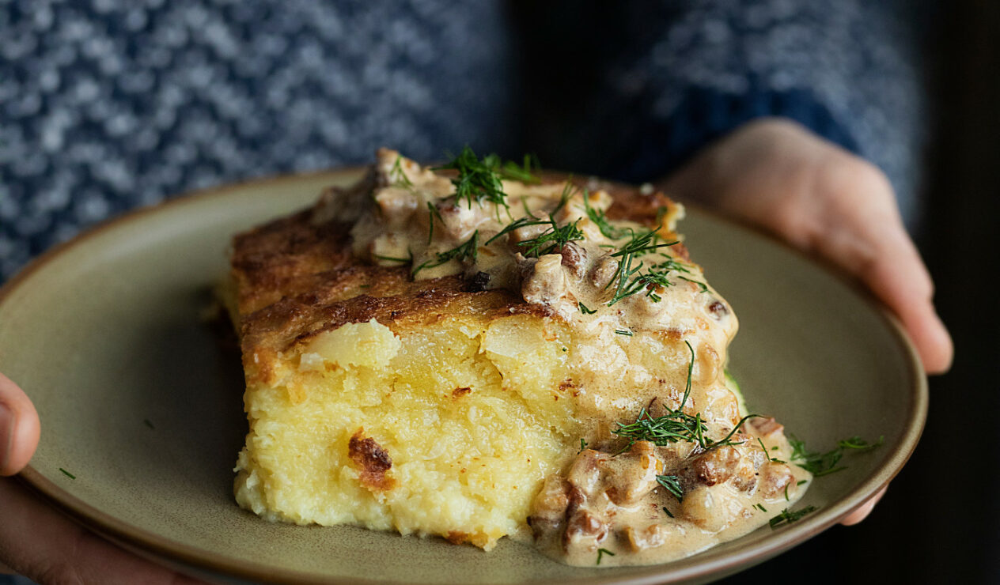

Kugelis - Lithuanian Potato Cake

This is a traditional Lithuanian dish. It is served in almost all local restaurants. You can find this dish in other Eastern Europe countries just in different names and a bit of variety of how it is prepared. It is a grated potatoes “pie” cooked in heavy duty dutch oven or high sided sheet pan or in cast iron pot - there is no strict rule. Usually, it is served with sour cream; smoked bacon bits or mushroom sauces. Other variations includes some meat - minced meat inside or chicken thighs/ drumsticks. All in all it is about the potatoes.
Instructions
Main dish
- Cut onions in small pieces and saute with butter in a pan on medium heat until they become translucent. Set aside.
- Whisk eggs with salt and pepper. Set aside.
- Grate potatoes. If it is too watery - drain them to separate bowl. After draining you should see some starch at the bottom of the drained water. Mix it back to potatoes mass. If your potates aren't starchy at all, add a tablespoon of potatoe (or corn) starch.
- Preheat the oven to 180 C / 350 F
- Boil the milk until you see the first bubbles.
- Pour milk over the potatoe mass. Mix it well.
- Add sauteed onion to the mass. Mix it well.
- Add eggs to the mass. Mix it well.
- Prepare the dutch oven/cast iron pot/high sided sheet pan by oiling the insides with a brush.
- Pour the mass in to the pot.
- Put it in the oven and cook for around an hour.
- Check preparedness by taste. It should be smooth texture, no grittiness felt between the teeth while tasting.
- Clean up everything while it cooks
Sour cream - butter sauce
Prepare the sauce when the kugelis is already done. This sauce is a fast one.
- Melt the butter in the pan on medium heat
- Remove from heat
- Add sour-cream and let it melt with leftover heat.
- Stir well.
- Add pepper, salt, dills - however much you want
- That's it. Simple fatty sauce!
Ingredients